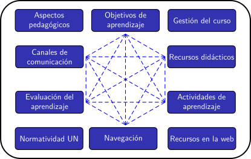

Planificación de clases remotas en la UNAL (periodo 2020-02)
Créditos y agradecimientos
Créditos y agradecimientos
Este curso virtual se ha diseñado y construido gracias al apoyo de muchas personas y dependencias de la Universidad Nacional de Colombia.
La iniciativa nació desde la Dirección Nacional de Innovación Académica y fue formulada en el marco de las acciones institucionales promovidas por el Comité de Crisis Académica. Al interior de ese Comité fueron muy valiosas las críticas y sugerencias recibidas especialmente por parte del Vicerrector Académico, Carlos Augusto Hernández, así como por parte de Doris Santos, Claudia Lucía Ordoñez, Diana Farías, José Daniel Muñoz, Luz Ángela Álvarez.
Desde su formulación inicial, el curso fue concebido como un espacio de colaboración que debía articular y visibilizar la mayor cantidad de esfuerzos que ya se venían realizando, de forma más o menos dispersa, tendientes a brindar a los docentes criterios y herramientas para el diseño de las asignaturas del periodo académico 2020-02.
Las direcciones académicas de las sedes acogieron con entusiasmo la iniciativa:
Desde la sede Manizales el Director Académico, Neil Guerrero, nos dio a conocer la serie de seminarios web "Encuentros pedagógicos" liderados por Diego Acosta en su dependencia.
Conocimos el trabajo incansable de Mariluz Álvarez Paniagua en la producción, coordinación y ejecución de talleres dirigidos a los docentes de la sede Medellín, gracias al Director Académico, Juan Carlos Ochoa.
Carlos Cubillos, Director Académico de la sede Bogotá, nos compartió el voluminoso trabajo de su equipo encabezado por Francy Julieth García y Sandra Delgado.
Además de las direcciones académicas, algunos grupos de investigación venían adelantando ya iniciativas muy útiles e interesantes: el Grupo de Investigación Tecnología para la Educación y la Innovación - GITEI - liderado por Fredy Andrés Olarte construyó el portal de Clases Remotas en la UN, en tanto que el Instituto de Educación en Ingeniería, dirigido por Diana López, adelantó unas experiencias de cocreación de Recursos Educativos Digitales en la Escuela de Minas, apoyándose en estudiantes.
La gran cantidad de seminarios web organizados por facultades como las de Ciencias, Ingeniería y Medicina en Bogotá (gracias al empuje de Diego Torres, Liz Karen Herrera y María Fernanda Lara, respectivamente) son prueba fehaciente de la dinámica institucional alrededor de la preocupación pedagógica.
La mirada del Observatorio de Inclusión, a través de Leyla Sanabria, Yeny Carolina Murillo y Paula Andrea Rodríguez, enriqueció la problematización del curso y nos formuló nuevos retos. Lo mismo debe decirse de los aportes de Erwin Fabián García López.
Los Directores Nacionales de Pregrado y Posgrado, Diana Farías y Edgar Daza, respectivamente, han venido adelantando un ingente esfuerzo por conocer y caracterizar la situación de docentes y estudiantes sin la cual este curso ni siquiera hubiera sido concebido.
Por último, pero no por ello menos importante, debo destacar el aporte del equipo de la Dirección Nacional de la Innovación Académica que sumó a su ya copiosa agenda de labores esta tarea contrarreloj. Yenny Correales, Soraya Layton, Rafael Rozo, Rosalba Pulido, Margie Jessup, Remberk Galeano, Nataly Carlosama, Heymar Santos, José Miguel Rodríguez, Efraín Arias aportaron toda su experticia y conocimiento pedagógico y tecnológico para que este proyecto fuese una realidad.
A todos ellos, y a los que involuntariamente haya olvidado mencionar, ¡Muchas gracias en nombre de la comunidad académica de la Universidad Nacional de Colombia!
Oscar Duarte
Licenciamiento
El contenido de este curso se publica con Licencia Creative Commons Reconocimiento Compartir igual 4.0
Este curso ha sido ensamblado utilizando eXeLearning. Los archivos fuentes estarán disponibles próximamente en Alejandría-D.
Obra publicada con Licencia Creative Commons Reconocimiento Compartir igual 4.0